<!DOCTYPE html>
<html>
<head><meta name="generator" content="Hexo 3.9.0">
  <!-- hexo-inject:begin --><!-- hexo-inject:end --><meta charset="utf-8">
  

  
  <title>为什么B+树适合作为索引的结构 | </title>
  <meta name="viewport" content="width=device-width, initial-scale=1, maximum-scale=1">
  <meta name="description" content="为了讨论这个问题，需要从硬盘结构、索引结构、搜索树等讲起。计算机的物理结构会影响到抽象的数据结构的设计，比如：硬盘的这一外存的物理特性导致读取数据很慢，速度上和内存可以达到数十万倍的差距，因此，如果对一个文件中的数据进行线性搜索，可想而知访问外存的次数会多么巨大，这是不现实的。可是即使对这个文件排序，然后进行二分查找定位到所需的数据，虽然次数远小于前面的线性搜索，但还是会进行很多次的访问外存操作，">
<meta property="og:type" content="article">
<meta property="og:title" content="为什么B+树适合作为索引的结构">
<meta property="og:url" content="http://xiaomeizhuang.github.io/2019/10/09/为什么B-树适合作为索引的结构/index.html">
<meta property="og:site_name">
<meta property="og:description" content="为了讨论这个问题，需要从硬盘结构、索引结构、搜索树等讲起。计算机的物理结构会影响到抽象的数据结构的设计，比如：硬盘的这一外存的物理特性导致读取数据很慢，速度上和内存可以达到数十万倍的差距，因此，如果对一个文件中的数据进行线性搜索，可想而知访问外存的次数会多么巨大，这是不现实的。可是即使对这个文件排序，然后进行二分查找定位到所需的数据，虽然次数远小于前面的线性搜索，但还是会进行很多次的访问外存操作，">
<meta property="og:locale" content="en">
<meta property="og:image" content="http://xiaomeizhuang.github.io/2019/10/09/为什么B-树适合作为索引的结构/diskstucture.png">
<meta property="og:image" content="http://xiaomeizhuang.github.io/2019/10/09/为什么B-树适合作为索引的结构/studentrecord.png">
<meta property="og:image" content="http://xiaomeizhuang.github.io/2019/10/09/为什么B-树适合作为索引的结构/spanned&unspanned.png">
<meta property="og:image" content="http://xiaomeizhuang.github.io/2019/10/09/为什么B-树适合作为索引的结构/studentrecords.png">
<meta property="og:image" content="http://xiaomeizhuang.github.io/2019/10/09/为什么B-树适合作为索引的结构/1primary%20index.png">
<meta property="og:image" content="http://xiaomeizhuang.github.io/2019/10/09/为什么B-树适合作为索引的结构/2clustered%20index1.png">
<meta property="og:image" content="http://xiaomeizhuang.github.io/2019/10/09/为什么B-树适合作为索引的结构/2clustered%20index2.png">
<meta property="og:image" content="http://xiaomeizhuang.github.io/2019/10/09/为什么B-树适合作为索引的结构/3secondaryindex1.png">
<meta property="og:image" content="http://xiaomeizhuang.github.io/2019/10/09/为什么B-树适合作为索引的结构/3secondaryindex2.png">
<meta property="og:image" content="http://xiaomeizhuang.github.io/2019/10/09/为什么B-树适合作为索引的结构/multilevelindex.png">
<meta property="og:image" content="http://xiaomeizhuang.github.io/2019/10/09/为什么B-树适合作为索引的结构/searchtrees.png">
<meta property="og:image" content="http://xiaomeizhuang.github.io/2019/10/09/为什么B-树适合作为索引的结构/Btree.png">
<meta property="og:image" content="http://xiaomeizhuang.github.io/2019/10/09/为什么B-树适合作为索引的结构/Btreeinsert.png">
<meta property="og:image" content="http://xiaomeizhuang.github.io/2019/10/09/为什么B-树适合作为索引的结构/Btreenodes.png">
<meta property="og:image" content="http://xiaomeizhuang.github.io/2019/10/09/为什么B-树适合作为索引的结构/B+trees1.png">
<meta property="og:image" content="http://xiaomeizhuang.github.io/2019/10/09/为什么B-树适合作为索引的结构/B+trees2.png">
<meta property="og:image" content="http://xiaomeizhuang.github.io/2019/10/09/为什么B-树适合作为索引的结构/B+treenodes.png">
<meta property="og:updated_time" content="2019-10-09T09:55:35.793Z">
<meta name="twitter:card" content="summary">
<meta name="twitter:title" content="为什么B+树适合作为索引的结构">
<meta name="twitter:description" content="为了讨论这个问题，需要从硬盘结构、索引结构、搜索树等讲起。计算机的物理结构会影响到抽象的数据结构的设计，比如：硬盘的这一外存的物理特性导致读取数据很慢，速度上和内存可以达到数十万倍的差距，因此，如果对一个文件中的数据进行线性搜索，可想而知访问外存的次数会多么巨大，这是不现实的。可是即使对这个文件排序，然后进行二分查找定位到所需的数据，虽然次数远小于前面的线性搜索，但还是会进行很多次的访问外存操作，">
<meta name="twitter:image" content="http://xiaomeizhuang.github.io/2019/10/09/为什么B-树适合作为索引的结构/diskstucture.png">
  
  
    <link rel="icon" href="/favicon.png">
  
  
    <link href="//fonts.googleapis.com/css?family=Source+Code+Pro" rel="stylesheet" type="text/css">
  
  <link rel="stylesheet" href="/css/style.css"><!-- hexo-inject:begin --><!-- hexo-inject:end -->
</head>
</html>
<body>
  <!-- hexo-inject:begin --><!-- hexo-inject:end --><div id="container">
    <div id="wrap">
      <header id="header">
  <div id="banner"></div>
  <div id="header-outer" class="outer">
    <div id="header-title" class="inner">
      <h1 id="logo-wrap">
        <a href="/" id="logo"></a>
      </h1>
      
    </div>
    <div id="header-inner" class="inner">
      <nav id="main-nav">
        <a id="main-nav-toggle" class="nav-icon"></a>
        
          <a class="main-nav-link" href="/">Home</a>
        
          <a class="main-nav-link" href="https://github.com/xiaomeizhuang">Github</a>
        
          <a class="main-nav-link" href="/About">About</a>
        
      </nav>
      <nav id="sub-nav">
        
        <a id="nav-search-btn" class="nav-icon" title="Search"></a>
      </nav>
      <div id="search-form-wrap">
        <form action="//google.com/search" method="get" accept-charset="UTF-8" class="search-form"><input type="search" name="q" class="search-form-input" placeholder="Search"><button type="submit" class="search-form-submit">&#xF002;</button><input type="hidden" name="sitesearch" value="http://xiaomeizhuang.github.io"></form>
      </div>
    </div>
  </div>
</header>
      <div class="outer">
        <section id="main"><article id="post-为什么B-树适合作为索引的结构" class="article article-type-post" itemscope itemprop="blogPost">
  <div class="article-meta">
    <a href="/2019/10/09/为什么B-树适合作为索引的结构/" class="article-date">
  <time datetime="2019-10-09T08:51:15.000Z" itemprop="datePublished">2019-10-09</time>
</a>
    
  </div>
  <div class="article-inner">
    
    
      <header class="article-header">
        
  
    <h1 class="article-title" itemprop="name">
      为什么B+树适合作为索引的结构
    </h1>
  

      </header>
    
    <div class="article-entry" itemprop="articleBody">
      
      <!-- Table of Contents -->
      
        <div id="toc" class="toc-article">
          <strong class="toc-title">目录</strong>
          <ol class="toc"><li class="toc-item toc-level-2"><a class="toc-link" href="#在硬盘上组织记录和文件"><span class="toc-number">1.</span> <span class="toc-text">在硬盘上组织记录和文件</span></a><ol class="toc-child"><li class="toc-item toc-level-3"><a class="toc-link" href="#硬盘"><span class="toc-number">1.1.</span> <span class="toc-text">硬盘</span></a><ol class="toc-child"><li class="toc-item toc-level-4"><a class="toc-link" href="#物理结构"><span class="toc-number">1.1.1.</span> <span class="toc-text">物理结构</span></a></li><li class="toc-item toc-level-4"><a class="toc-link" href="#逻辑结构"><span class="toc-number">1.1.2.</span> <span class="toc-text">逻辑结构</span></a></li><li class="toc-item toc-level-4"><a class="toc-link" href="#工作原理"><span class="toc-number">1.1.3.</span> <span class="toc-text">工作原理</span></a></li></ol></li><li class="toc-item toc-level-3"><a class="toc-link" href="#记录"><span class="toc-number">1.2.</span> <span class="toc-text">记录</span></a><ol class="toc-child"><li class="toc-item toc-level-4"><a class="toc-link" href="#记录及其数据类型"><span class="toc-number">1.2.1.</span> <span class="toc-text">记录及其数据类型</span></a></li><li class="toc-item toc-level-4"><a class="toc-link" href="#定长和变长记录"><span class="toc-number">1.2.2.</span> <span class="toc-text">定长和变长记录</span></a></li><li class="toc-item toc-level-4"><a class="toc-link" href="#把记录分配在磁盘块中"><span class="toc-number">1.2.3.</span> <span class="toc-text">把记录分配在磁盘块中</span></a></li></ol></li><li class="toc-item toc-level-3"><a class="toc-link" href="#文件"><span class="toc-number">1.3.</span> <span class="toc-text">文件</span></a><ol class="toc-child"><li class="toc-item toc-level-4"><a class="toc-link" href="#文件组织"><span class="toc-number">1.3.1.</span> <span class="toc-text">文件组织</span></a></li><li class="toc-item toc-level-4"><a class="toc-link" href="#文件头"><span class="toc-number">1.3.2.</span> <span class="toc-text">文件头</span></a></li><li class="toc-item toc-level-4"><a class="toc-link" href="#文件操作"><span class="toc-number">1.3.3.</span> <span class="toc-text">文件操作</span></a></li></ol></li></ol></li><li class="toc-item toc-level-2"><a class="toc-link" href="#排序文件"><span class="toc-number">2.</span> <span class="toc-text">排序文件</span></a><ol class="toc-child"><li class="toc-item toc-level-3"><a class="toc-link" href="#二分搜索算法"><span class="toc-number">2.1.</span> <span class="toc-text">二分搜索算法</span></a><ol class="toc-child"><li class="toc-item toc-level-4"><a class="toc-link" href="#算法说明"><span class="toc-number">2.1.1.</span> <span class="toc-text">算法说明</span></a></li><li class="toc-item toc-level-4"><a class="toc-link" href="#问题"><span class="toc-number">2.1.2.</span> <span class="toc-text">问题</span></a></li></ol></li></ol></li><li class="toc-item toc-level-2"><a class="toc-link" href="#单层顺序索引"><span class="toc-number">3.</span> <span class="toc-text">单层顺序索引</span></a><ol class="toc-child"><li class="toc-item toc-level-3"><a class="toc-link" href="#主索引"><span class="toc-number">3.1.</span> <span class="toc-text">主索引</span></a><ol class="toc-child"><li class="toc-item toc-level-4"><a class="toc-link" href="#性能"><span class="toc-number">3.1.1.</span> <span class="toc-text">性能</span></a></li><li class="toc-item toc-level-4"><a class="toc-link" href="#问题-1"><span class="toc-number">3.1.2.</span> <span class="toc-text">问题</span></a></li></ol></li><li class="toc-item toc-level-3"><a class="toc-link" href="#聚集索引"><span class="toc-number">3.2.</span> <span class="toc-text">聚集索引</span></a><ol class="toc-child"><li class="toc-item toc-level-4"><a class="toc-link" href="#问题-2"><span class="toc-number">3.2.1.</span> <span class="toc-text">问题</span></a></li></ol></li><li class="toc-item toc-level-3"><a class="toc-link" href="#辅助索引"><span class="toc-number">3.3.</span> <span class="toc-text">辅助索引</span></a><ol class="toc-child"><li class="toc-item toc-level-4"><a class="toc-link" href="#关键字段索引"><span class="toc-number">3.3.1.</span> <span class="toc-text">关键字段索引</span></a><ol class="toc-child"><li class="toc-item toc-level-5"><a class="toc-link" href="#性能-1"><span class="toc-number">3.3.1.1.</span> <span class="toc-text">性能</span></a></li></ol></li><li class="toc-item toc-level-4"><a class="toc-link" href="#非关键字段索引"><span class="toc-number">3.3.2.</span> <span class="toc-text">非关键字段索引</span></a></li></ol></li></ol></li><li class="toc-item toc-level-2"><a class="toc-link" href="#多层索引"><span class="toc-number">4.</span> <span class="toc-text">多层索引</span></a><ol class="toc-child"><li class="toc-item toc-level-3"><a class="toc-link" href="#原理"><span class="toc-number">4.1.</span> <span class="toc-text">原理</span></a></li><li class="toc-item toc-level-3"><a class="toc-link" href="#结构"><span class="toc-number">4.2.</span> <span class="toc-text">结构</span></a></li><li class="toc-item toc-level-3"><a class="toc-link" href="#性能-2"><span class="toc-number">4.3.</span> <span class="toc-text">性能</span></a></li></ol></li><li class="toc-item toc-level-2"><a class="toc-link" href="#动态多层索引"><span class="toc-number">5.</span> <span class="toc-text">动态多层索引</span></a><ol class="toc-child"><li class="toc-item toc-level-3"><a class="toc-link" href="#树"><span class="toc-number">5.1.</span> <span class="toc-text">树</span></a></li><li class="toc-item toc-level-3"><a class="toc-link" href="#搜索树"><span class="toc-number">5.2.</span> <span class="toc-text">搜索树</span></a><ol class="toc-child"><li class="toc-item toc-level-4"><a class="toc-link" href="#定义"><span class="toc-number">5.2.1.</span> <span class="toc-text">定义</span></a></li></ol></li><li class="toc-item toc-level-3"><a class="toc-link" href="#b树平衡树"><span class="toc-number">5.3.</span> <span class="toc-text">\(B\)树：平衡树</span></a><ol class="toc-child"><li class="toc-item toc-level-4"><a class="toc-link" href="#定义-1"><span class="toc-number">5.3.1.</span> <span class="toc-text">定义</span></a></li><li class="toc-item toc-level-4"><a class="toc-link" href="#插入和删除"><span class="toc-number">5.3.2.</span> <span class="toc-text">插入和删除</span></a></li></ol></li><li class="toc-item toc-level-3"><a class="toc-link" href="#b树"><span class="toc-number">5.4.</span> <span class="toc-text">\(B^+\)树</span></a><ol class="toc-child"><li class="toc-item toc-level-4"><a class="toc-link" href="#定义-2"><span class="toc-number">5.4.1.</span> <span class="toc-text">定义</span></a></li><li class="toc-item toc-level-4"><a class="toc-link" href="#搜索插入和删除"><span class="toc-number">5.4.2.</span> <span class="toc-text">搜索、插入和删除</span></a><ol class="toc-child"><li class="toc-item toc-level-5"><a class="toc-link" href="#处理溢出"><span class="toc-number">5.4.2.1.</span> <span class="toc-text">处理溢出</span></a></li><li class="toc-item toc-level-5"><a class="toc-link" href="#处理下溢"><span class="toc-number">5.4.2.2.</span> <span class="toc-text">处理下溢</span></a></li></ol></li></ol></li><li class="toc-item toc-level-3"><a class="toc-link" href="#b树-1"><span class="toc-number">5.5.</span> <span class="toc-text">\(B^*\)树</span></a></li><li class="toc-item toc-level-3"><a class="toc-link" href="#总结"><span class="toc-number">5.6.</span> <span class="toc-text">总结</span></a></li></ol></li><li class="toc-item toc-level-2"><a class="toc-link" href="#参考文章"><span class="toc-number">6.</span> <span class="toc-text">参考文章：</span></a></li></ol>
        </div>
      
        <p>为了讨论这个问题，需要从硬盘结构、索引结构、搜索树等讲起。计算机的物理结构会影响到抽象的数据结构的设计，比如：硬盘的这一外存的物理特性导致读取数据很慢，速度上和内存可以达到数十万倍的差距，因此，如果对一个文件中的数据进行线性搜索，可想而知访问外存的次数会多么巨大，这是不现实的。可是即使对这个文件排序，然后进行二分查找定位到所需的数据，虽然次数远小于前面的线性搜索，但还是会进行很多次的访问外存操作，而且维持一个数据量大的文件有序也并不简单，所以这也并非优解。因此我们需要一个索引结构，类似二分查找那样每次检索都排除掉一半的待检索数据，如果这个索引结构是阶数大于2的树结构，那么每次检索就能比二分查找排除掉更多的待检索数据。由于是树结构，那么就需要考虑平衡问题，因此演变成动态多层索引结构，避免出现经过删除增加节点时树结构趋向链表，等等，以上这些方面都和<span class="math inline">\(B^+\)</span>树作为索引结构相关，文章里尽可能详细地介绍了这几个方面，参考书目在文章的最后。</p>
<a id="more"></a>
<h2 id="在硬盘上组织记录和文件">在硬盘上组织记录和文件</h2>
<p><span class="math inline">\(B^+​\)</span>的设计和硬盘结构以及其如何存储数据紧密相关，所以先从硬盘、记录、文件等这些概念说起。</p>
<h3 id="硬盘">硬盘</h3>
<p>计算机存储器可以分为内部存储器<span class="math inline">\((Main\;Memory)\)</span>与外部存储器<span class="math inline">\((External\;Memory)\)</span>。</p>
<p>内存的特点：</p>
<ul>
<li>易失性存储器<span class="math inline">\((volatile\;memory)​\)</span>：当电源供应中断后，存储的资料便会消失。</li>
<li>随机存取：存储器中的信息被读取或写入时，所需要的时间和其所在的位置无关</li>
<li>速度快：内部结构比较复杂，但一般都是使用电信号保存信息，不存在机器操作，所以访问速度非常快。</li>
<li>容量小，价格比较贵</li>
</ul>
<p>外存的特点：</p>
<ul>
<li>非易失性存储器<span class="math inline">\((nonvolatile\;memory)\)</span>：即使电源供应中断后，存储器所存储的数据并不会消失，重新供电后，就能够读取其中的数据。</li>
<li>半随机存取：虽然可以任意顺序读取硬盘中的数据，但是读取速度和位置有关。</li>
<li>容量大：从GB到TB级</li>
<li>速度慢：涉及到机器操作，读取速度为毫秒级。</li>
</ul>
<p>硬盘是外部存储器的一种，速度比其他外存设备更快。</p>
<h4 id="物理结构">物理结构</h4>
<p>硬盘<span class="math inline">\((disk)\)</span>由一个或多个叠放在一起的盘片<span class="math inline">\((platter)\)</span>组成。盘片的两个表面<span class="math inline">\((surface)\)</span>都覆盖着磁性记录材料，磁性材料被极化成S/N极，两种极性对应着二进制的0/1，通过读写头<span class="math inline">\((read/write\;head)\)</span>的电磁流来改变极性的方式从而记录数据，同样的，硬盘用读写头来读取存储在磁性表面的位，读写头连接于传送臂<span class="math inline">\((actuator\;arm)\)</span>的一端。盘片中间有一个可旋转的主轴，使得盘片以固定速率旋转，比如5400转每分钟<span class="math inline">\((Revolution\;Per\;Minute，RPM)\)</span>，通过传送臂的转动，可以将读写头定位到盘面的任何位置上。</p>
<p>每个盘片表面由一组同心的圆形轨迹组成，称为磁道<span class="math inline">\((track)\)</span>。每个磁道又被划分为一组扇区<span class="math inline">\((sector)\)</span>，每个扇区包含相等数量的数据位，扇区之间存在间隙<span class="math inline">\((gap)\)</span>。所有的盘片表面上到主轴距离相等的磁道集合为柱面<span class="math inline">\((cylinder)​\)</span>。</p>
<p>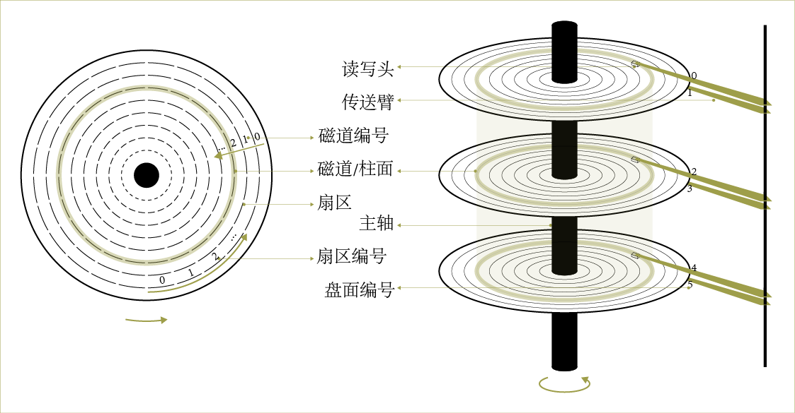</p>
<p>补充：在老式机械磁盘中，每个磁道的扇区弧长是不一样的。越靠内的磁道密度越大，存储的数据也就越多；越靠外的磁道密度越小，存储的数据也就越少。所以，虽然内外磁道的扇区弧长不一样，由于密度的原因，每个扇区存储的数据量仍然是一样的，都是512B。在新式磁盘中，内外磁道的扇区密度都是相同的，所以新式磁盘每个扇区的弧长都是一样的。</p>
<h4 id="逻辑结构">逻辑结构</h4>
<p>硬盘的读写单位是扇区。扇区是硬盘中最小存储单元，每个扇区都有编号而且大量存在，所以操作系统无法对如此大量的扇区进行寻址，因此将相邻的扇区组合在一起，组成簇<span class="math inline">\((cluster)​\)</span>这种单位，每个簇可能包括2、4、8、16、32或64个扇区。</p>
<p>还有块<span class="math inline">\((block)\)</span>和页<span class="math inline">\((page)\)</span>的概念，块和簇同理，在不同的操作系统下称呼不同，是操作系统和硬盘传输数据的单位。类似的，页是操作系统和内存之间数据交流的虚拟单位。</p>
<p>一个逻辑硬盘块是由B个编号分别为<span class="math inline">\(0, 1, ..., B-1\)</span>扇区组成的序列，硬盘中存在一个磁盘控制器用于维护着逻辑块号和物理硬盘扇区之间的映射关系。</p>
<h4 id="工作原理">工作原理</h4>
<p>系统将文件存储到磁盘上时，按柱面、磁头、扇区的方式进行，最先的是第一条磁道的第一个磁头下的所有扇区，然后是同一柱面的下一个磁头，一个柱面存储满后才推进到下一个柱面，直到把文件内容全部写入磁盘。</p>
<p>系统也以相同的顺序读出数据。执行一次I/O操作，比如读取某个扇区的数据到主存，操作系统会发送一个命令到控制器，从而读取某个逻辑块号，控制器将逻辑块号翻译成一个（盘面，磁道，扇区）的唯一标识了对应物理扇区的三元组，读写头移动到相应的柱面，等到扇区转到读写头下，就将读写头感知的位拷贝到主存中。</p>
<p>对扇区的访问时间<span class="math inline">\((access\;time)​\)</span>分为几个部分：</p>
<p>寻道时间<span class="math inline">\((seek\;time)\)</span>：为了读取某个目标扇区的内容，传动臂首先将读写头定位到包含目标扇区的磁道上。移动传动臂所需的时间称为寻道时间。通常为3～9ms。</p>
<p>旋转时间<span class="math inline">\((rotational\;time)​\)</span>：一旦读写头定位到了期望的磁道，驱动器等待 目标扇区的第一个位 旋转到读写头下。这个时间依赖于读写头的位置和盘面的旋转时间。</p>
<p>传送时间<span class="math inline">\((transfer\;time)​\)</span>：当目标扇区的第一个位位于读写头下时，驱动器就可以开始读或者写该扇区的内容了。一个扇区的传送时间依赖于旋转速度和每条磁道的扇区数目。</p>
<p>由于硬盘存储介质的特性，再加上机械运动的时间，硬盘的存取速度比内存慢很多，为了提高效率，因此需要尽量减少I/O，也就是减少访问外存的次数。因此，硬盘不是严格地按需读取，根据计算机的局部性原理，当一个数据被用到时它附近的数据也会马上被用到，所以每次都会预读，预读的长度一般为块的整数倍。</p>
<h3 id="记录">记录</h3>
<h4 id="记录及其数据类型">记录及其数据类型</h4>
<p>记录<span class="math inline">\((record)​\)</span>是通常存储数据的单元。每条记录是相关数据项的集合，其中每个项由一个或多个字节组成，对应于记录的特定字段<span class="math inline">\((field)​\)</span>。记录通常描述实体及其属性。字段（也就是数据项）名称及其相应数据类型的集合构成记录类型。简而言之，我们可以说记录类型对应于实体类型，而具体类型的记录表示相应实体类型的实例。</p>
<p>以下是一个记录类型的示例：</p>
<p>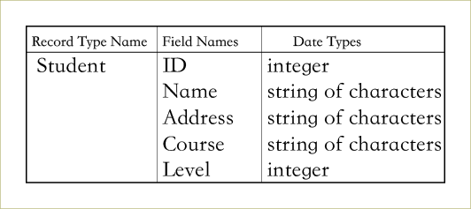</p>
<p>student类型的某条记录：</p>
<p>student(9901536, "James Bond", "1 Bond Street, London", "Intelligent Services", 9)</p>
<h4 id="定长和变长记录">定长和变长记录</h4>
<p>文件<span class="math inline">\((file)​\)</span>基本上包含一系列记录。通常，一个文件中的所有记录都是相同的记录类型。如果文件中的每条记录都具有相同的字节数，则记录称为定长记录<span class="math inline">\((fixed-length\;record)​\)</span>。如果文件中的记录存在不同的大小，则称为变长记录<span class="math inline">\((variable-length\;record)​\)</span>。</p>
<p>变长记录存在于文件中的原因如下：</p>
<ul>
<li>即使每条记录都是相同类型，但是可能其中的某些字段具有不同的长度。例如，不同的长度的学生名字。</li>
<li>即使记录具有相同的类型，但是可能其中的某些字段是具有多种值的重复字段。</li>
<li>如果某些字段是可选的，即使记录相同类型但并非所有记录都具有它们的值。</li>
<li>文件可能包含不同记录类型的记录。在这种情况下，文件中的记录可能具有不同的大小。</li>
</ul>
<p>对于定长记录，可以提前确定每条记录的确切大小。因此，它们可以很容易地分配给块。此外，我们可以确定和记录起始位置关联的每个字段的起始字节位置。因为这些记录具有相同的字段，并且长度事先已知且固定，这为我们提供了一种在文件中查找记录的字段值的简单方法。</p>
<p>对于具有长度可变的字段的记录，我们可能无法事先知道这些字段的确切长度。为了确定容纳这些字段所需的字节，我们可以使用特殊的分隔符（例如~, <span class="citation" data-cites="或">@或</span>! ），它们不会出现在任何字段值中，以终止变长字段。此方式的替代方法是存储一个确切长度在相关的记录中。</p>
<p>重复字段需要一个分隔符来分隔重复值，还需另一个分隔符表明字段的终止。简而言之，我们需要在将变长记录分配给一个或多个块之前找出它的确切大小。同样显而易见的是，处理变长记录文件的程序将比定长记录的程序更复杂，后者每个字段的起始位置和大小是已知的并且是固定的。</p>
<p>定长记录在存储和检索记录中的字段值方面优于变长记录。因此，在某些情况下，使用定长的记录结构来表示逻辑上变长记录是可能的并且也是有利的。</p>
<p>例如，我们可以使用足够大的定长记录结构来容纳文件中预期的最大变长记录。对于重复字段，我们可以在每个记录中分配和该字段所能采用的最大空间一样尽可能多的空间。在可选字段的情况下，我们可能在每个文件记录中包含每个字段。如果可选字段不适用于某条记录，则在该字段中存储特殊的空值。然而，通过采用这种方法，可能浪费大量空间以换取更容易的存储和检索。</p>
<h4 id="把记录分配在磁盘块中">把记录分配在磁盘块中</h4>
<p>必须将文件记录分配给磁盘块，<strong>因为块是磁盘和主存储器之间数据传输单位<span class="math inline">\((unit\;of\;data\;transfer)​\)</span></strong>。当记录小于块的大小时，块可以容纳多条记录。如果记录太大而无法分配在同一个块中，则必须使用两个或更多的块。</p>
<p>假设块的大小是<span class="math inline">\(B​\)</span>字节，并且文件包含大小为<span class="math inline">\(R​\)</span>字节的定长记录。如果<span class="math inline">\(B&gt;=R​\)</span>，则我们可以将<span class="math inline">\(bfr=\lfloor B/R\rfloor​\)</span>个记录分配到一个块中，其中<span class="math inline">\(\lfloor x\rfloor​\)</span>是所谓的floor函数，它将值x向下舍入到下一个整数。值<span class="math inline">\(bfr​\)</span>被定义为文件的块因子<span class="math inline">\((blocking\;factor)​\)</span>。</p>
<p>通常，分配不会十分精确，因此每个块中将存在一些大小等于<span class="math inline">\(B-bfr*R​\)</span>字节的剩余空间。</p>
<p>如果不想浪费块中未使用的空间，我们可以选择将记录的一部分存储在其中，将剩余的部分存储在另一个块中。第一个块末尾的指针指向包含这个记录其他部分的块，防止它们不是磁盘上的连续块。因为记录可以跨越多个块，所以称这种组织方式为"跨块存储"<span class="math inline">\((spanned)​\)</span>。如果不允许记录跨越块的边界，则称为“不跨块存储”<span class="math inline">\((unspanned)​\)</span>。</p>
<p>不跨块的组织方式对于<span class="math inline">\(R&lt;B\)</span>的定长记录非常有用。它使每个记录从块中的已知位置开始，从而简化了记录处理。</p>
<p>对于变长记录，两者都行。对于使用跨块存储的变长记录，每个块可以存储不同数量的记录。在这种情况下，块因子<span class="math inline">\(bfr\)</span>则表示文件的每个块的平均记录数。然后我们可以使用<span class="math inline">\(bfr\)</span>来计算容纳<span class="math inline">\(r\)</span>记录文件所需的块数<span class="math inline">\(b =\lceil r/bfr \rceil\)</span>，其中<span class="math inline">\(\lceil x \rceil\)</span>是所谓的上限函数，它将值<span class="math inline">\(x\)</span>向上舍入到最接近的整数。</p>
<p>下图是变长记录的跨块和不跨块组织：</p>
<p></p>
<p>如果记录大小<span class="math inline">\(R\)</span>大于块大小<span class="math inline">\(B\)</span>，则必须使用跨区组织。</p>
<h3 id="文件">文件</h3>
<h4 id="文件组织">文件组织</h4>
<p>这个概念通常是指将数据组织成记录，块和访问结构。它包括将记录和块放在磁盘上并相互链接的方式。<strong>访问结构尤为重要。它们确定文件中的记录在逻辑上和物理上是如何相互链接的，因此决定了可以使用哪些访问方法。</strong></p>
<p>访问方法这包括一组允许对文件执行操作的程序。某些访问方法只能应用于以某种方式组织的文件。例如，索引访问方法只能用于索引文件。</p>
<h4 id="文件头">文件头</h4>
<p>文件通常包含文件头或文件描述符，提供程序所需的访问文件记录的信息。文件头的内容包含可用于确定文件块的磁盘地址的信息，以及记录的格式描述，其中包括定长不跨块记录中的字段长度和字段顺序，分隔符，变长记录的类型代码。</p>
<p><strong>要在磁盘上搜索记录，一个或多个块被传输到主存储器缓冲区，然后程序使用文件头信息在缓冲区内搜索所需的记录。</strong></p>
<p>如果不知道包含所需记录的块的地址，则程序必须通过块执行线性搜索。将每个块加载到缓冲区中并进行检查，直到找到记录或者所有块都未成功搜索（这意味着所需的记录不在文件中）。对于大文件来说，这可能非常耗时。<strong>良好的文件组织的目标是找到在最少块传输次数下的包含所需记录的块。</strong></p>
<h4 id="文件操作">文件操作</h4>
<p>文件操作通常可以分为检索操作和更新操作。前者不会更改文件中的任何内容，只能找到某些记录以供进一步处理。后者通过插入或删除或修改某些记录来更改文件。</p>
<p>通常有以下几种操作：</p>
<ul>
<li><strong>查找（或定位）：</strong>搜索满足搜索条件的第一条记录。将包含该记录的块传输到缓冲区（如果不在主存储器中）。记录位于缓冲区中并成为当前记录（准备处理）。</li>
<li><strong>读取（或获取）：</strong>将当前记录从缓冲区复制到程序变量。此命令还可以将当前记录指针前进到文件中的下一条记录。</li>
<li><strong>FindNext：</strong>搜索满足搜索条件的文件中的下一条记录。将包含该记录的块传输到缓冲区，记录成为当前记录。</li>
<li><strong>删除：</strong>删除当前记录并更新磁盘上的文件以反映所请求的更改。</li>
<li><strong>修改：</strong>修改当前记录的某些字段值，并更新磁盘上的文件以反映修改。</li>
<li><strong>插入：</strong>通过定位待插入记录的块位置，将该块传输到缓冲区，将（新）记录写入缓冲区，并将缓冲区写入磁盘文件以反映插入，从而在文件中插入新记录。</li>
<li><strong>FindAll：</strong>查找文件中满足搜索条件的所有记录。</li>
<li><strong>FindOrdered：</strong>按指定顺序检索文件中的所有记录。</li>
<li><strong>重组：</strong>根据特定条件重新排列文件中的记录。一个例子是'sort'操作，它根据指定字段的值组织记录。</li>
<li><strong>打开：</strong>通过检索文件头并为后续文件操作准备缓冲区，从而准备文件以进行访问。</li>
<li><strong>关闭：</strong>使用文件结束的信号。</li>
</ul>
<h2 id="排序文件">排序文件</h2>
<p>文件组织组织主要有堆文件，排序文件和哈希文件(为了方便讲下文的索引，只讲排序文件。PS.堆文件也可以使用<span class="math inline">\(B^+\)</span>树，哈希文件和相关算法另外文章再讲)。</p>
<p>可以基于其中一个字段的值对文件中的记录进行物理排序，这种文件组织称为排序文件，使用的字段称为排序字段。如果排序字段也是关键字段，则称其为文件的排序关键字。</p>
<p>下图描绘了包含学生记录的已排序文件组织STUDENT：</p>
<p></p>
<p>排序的文件组织比无序文件具有一些优势，例如：</p>
<ul>
<li>按排序字段值的顺序读取记录变得非常有效，因为不需要排序。（请记住，其中一个常见的文件操作是FindOrdered。）</li>
<li>按顺序字段的顺序定位当前记录的下一条记录通常不需要额外的块访问，因为下一条记录通常存储在同一块中（除非当前记录是块中的最后一条记录）。</li>
<li>当使用二分搜索算法时，使用基于排序字段的值的搜索条件进行检索可以是有效的。</li>
</ul>
<h3 id="二分搜索算法">二分搜索算法</h3>
<p><strong>可以对块而不是记录执行磁盘文件的二分检索</strong>，假设：</p>
<ul>
<li>该文件有<span class="math inline">\(b​\)</span>块磁盘块编号为<span class="math inline">\(1, 2, ..., b​\)</span>；</li>
<li>记录按其排序关键字段的升序排序；</li>
<li>我们正在搜索其排序字段值为K的记录；</li>
<li>文件头中提供了文件块的磁盘地址。</li>
</ul>
<h4 id="算法说明">算法说明</h4>
<ul>
<li>二分搜索算法始终从文件中的中间块开始。中间块被加载到缓冲区中。</li>
<li>然后将指定的排序字段值<span class="math inline">\(K\)</span>与第一个记录和缓冲区中的最后一个记录的值进行比较。</li>
<li>如果<span class="math inline">\(K​\)</span>小于第一条记录的排序字段值，则表示所需记录肯定位于文件的前半部分（如果它完全在文件中）。在这种情况下，新的二分搜索从文件的上半部分开始，下半部分的块可以忽略。</li>
<li>如果<span class="math inline">\(K\)</span>值大于最后一条记录的排序字段值，则表示所需记录必须位于文件的后半部分（如果它完全在文件中）。在这种情况下，新的二分搜索从文件的下半部分开始，上半部分的块可以忽略。</li>
<li>如果<span class="math inline">\(K\)</span>值在第一个和最后一个记录的排序字段值之间，那么它应该在已经在缓冲区中的块中。如果不是，则表示记录根本不在文件中。</li>
</ul>
<h4 id="问题">问题</h4>
<p>仅当搜索基于排序字段值时，排序文件组织才能提供非常有效的检索性能。例如，搜索以下SQL查询是有效的：</p>
<p>从<span class="math inline">\(STUDENT\)</span>中选择<span class="math inline">\(NAME, ADDRESS\)</span>，其中<span class="math inline">\(ID=013​\)</span>；</p>
<p>如果<span class="math inline">\(ID\)</span>不在条件中，则必须使用线性搜索，并且没有性能优势。</p>
<p><strong>更新操作（例如插入和删除）对于有序文件来说是昂贵的，因为我们必须始终维护文件中的记录顺序。</strong></p>
<p>要插入新记录，我们必须首先根据其排序字段值在文件中的现有记录中找到其正确位置。然后必须在该位置处腾出空间以存储它。这涉及重新组织文件，对于大文件，它可能非常耗时。原因是平均情况下要移动文件的一半记录才能产生这个空间。对于记录删除，如果使用删除标记并定期重新组织文件，问题就不那么严重了。</p>
<p><strong>使插入更有效的一个选项是在每个块中保留一些未使用的空间以用于新记录</strong>。但是，一旦这个空间用完，原来的问题就会重新出现。</p>
<p>修改操作的性能取决于两个因素：第一，定位记录的搜索条件，第二，要修改的字段。</p>
<ul>
<li>如果搜索条件涉及排序字段，则可以使用有效的二分搜索。否则，我们必须进行线性搜索。</li>
<li>如果修改的是非排序字段值，那么直接将修改后的记录重写回其原始位置（假设定长记录）。</li>
<li>如果修改的是排序字段值，意味着记录可能会更改其在文件中的位置，这需要删除旧记录，然后将修改后的记录作为新记录插入。</li>
</ul>
<p><strong>除非文件中包含主索引结构，否则很少在数据库中使用排序文件组织。如果没有索引的话，根据硬盘工作原理，访问数据记录会非常慢。索引结构可以进一步改善基于排序字段的随机访问时间。但是，一般来说索引本身也很大，不可能全部存储在内存中，因此索引往往以索引文件的形式存储在磁盘上。这样的话，索引查找过程中就要产生磁盘I/O消耗，相对于内存存取，I/O存取的消耗要高几个数量级，所以索引的结构组织要尽量减少查找过程中磁盘I/O的存取次数。</strong></p>
<p>下面详细介绍几种索引结构：</p>
<h2 id="单层顺序索引">单层顺序索引</h2>
<p>有几种类型的单层顺序索引：</p>
<p>主索引<span class="math inline">\((primary\;index)\)</span>是建立在有序的关键字段上的索引。</p>
<p>如果记录不是在关键字段而是在非关键字段上排序，则可以构建聚集索引<span class="math inline">\((clustering\; index)\)</span>。</p>
<p>不同之处在于，不同的记录在关键字段中具有不同的值，但对于非关键字段，某些记录可能会有相同的值。文件最多只能有一个物理排序字段。因此，它可以具有至多一个主索引或一个聚类索引，但不能同时具有两个。</p>
<p>可以在文件的任何非排序字段上指定第三种类型的索引，称为辅助索引<span class="math inline">\((secondary\;index)\)</span>。除了主要访问路径（即主索引或聚集索引）之外，文件还可以有多个辅助索引。如前所述，辅助索引不会影响记录的物理组织。</p>
<h3 id="主索引">主索引</h3>
<p>主索引是数据文件在关键字段（对于每条记录而言，关键字段具有唯一值）上排序的索引文件。</p>
<p>索引中每个条目定长且具有两个字段，第一个字段与数据文件的排序关键字段的数据类型相同，称为主键<span class="math inline">\((primary\;key)​\)</span>，第二个字段是指向磁盘块的指针（即块地址）。每个索引条目（即索引记录）对应数据文件中的每个块，条目中具有块中第一条数据记录的主键字段的值，以及指向该块的指针，这两者为其两个字段值。</p>
<p>我们使用以下表示法来表示索引条目<span class="math inline">\((index\;entry)\)</span>i：<span class="math inline">\(&lt;K(i), P(i)&gt;\)</span>（其中<span class="math inline">\(K(i)\)</span>是主键，<span class="math inline">\(P(i)\)</span>是指针）</p>
<p><span class="math inline">\(eg.\)</span>以这个 <span class="math inline">\(STUDENT\)</span> 文件为例，<span class="math inline">\(ID\)</span>作为主键（因为<span class="math inline">\(ID\)</span>是这个数据文件的排序关键码），索引文件中的每个条目都有一个<span class="math inline">\(ID​\)</span>值和一个指针：</p>
<p></p>
<p>其中这个索引文件的前三个条目为：</p>
<p><span class="math inline">\(&lt;K(1)=001, P(1)=address_-of_-block 1&gt;​\)</span></p>
<p><span class="math inline">\(&lt;K(2)=006, P(2)=address_-of_-block 2&gt;\)</span></p>
<p><span class="math inline">\(&lt;K(3)=011, P(3)=address_-of_-block 3&gt;\)</span></p>
<p>如果有一个主键值为<span class="math inline">\(K​\)</span>的记录，<span class="math inline">\(K(i)&lt;=K&lt;K(i+1)​\)</span>，则它在地址为<span class="math inline">\(P(i)​\)</span>的块中，因为第<span class="math inline">\(i​\)</span>个块包括了所有满足这个条件的记录。因此，为了检索一条记录，给定其主键字段的值<span class="math inline">\(K​\)</span>后，我们对索引文件进行二分搜索从而找到合适的索引条目<span class="math inline">\(i​\)</span>，然后使用指针<span class="math inline">\(P(i)​\)</span>存储的块地址来检索数据块。</p>
<p>比如，上面的数据文件中，<span class="math inline">\(ID=008\)</span>的记录会在第二个块中，因为<span class="math inline">\(K(2)&lt;=008&lt;K(3)\)</span>，实际上，只要<span class="math inline">\(ID\)</span>值介于<span class="math inline">\(K(2)\)</span>和<span class="math inline">\(K(3)\)</span>之间的记录就会在块<span class="math inline">\(2\)</span>中。</p>
<p>主索引是稀疏索引的一种情况，因为对于每个磁盘块，它只有一个条目，而不是像密集索引那样，数据文件中的每条记录都有对应的条目。</p>
<p>因此，索引的条目数等于数据文件所用的磁盘块数，数据文件在每个块的第一条记录称为锚记录或者块锚<span class="math inline">\((block\;anchor)​\)</span>。(也可以用块的最后一条记录作为锚记录。这两种方案非常相同并且性能没有差异，因此讨论一种就足够了）</p>
<p>补充一句，密集索引包含每个数据记录的条目，因此不要求数据文件是已排序的文件。相对的，它可以构建在任何文件组织（通常是堆文件）上。</p>
<p>由于以下两点原因，主索引的索引文件比数据记录文件需要的块少得多：</p>
<ul>
<li><p>由于是每个块而非每条记录都存在一个条目，所以索引条目远少于数据文件中的记录。</p></li>
<li><p>索引条目的大小通常小于数据记录，因为它只有两个字段。因此，同一个块可以放进更多数量的索引条目。因此，对索引文件进行二分搜索比对数据文件需要更少次的块访问。</p></li>
</ul>
<h4 id="性能">性能</h4>
<p>示例1.</p>
<p>通过使用主索引所需的块访问次数来说明在检索性能上的改进：</p>
<p>假设我们有一个有序文件，有<span class="math inline">\(r = 40,000​\)</span>条的记录存储在块大小为<span class="math inline">\(B = 1024​\)</span>字节的磁盘上。文件记录定长并且不跨块，每条记录大小<span class="math inline">\(R = 100​\)</span>字节，那么这个数据文件的块因子 <span class="math inline">\(bfr=\lfloor B/R \rfloor=\lfloor1024/100\rfloor=10​\)</span>，每个块存放10条记录，所以该文件所需的块数是<span class="math inline">\(b=\lceil r/bfr \rceil=\lceil40,000/10\rceil=4000​\)</span> ，<strong>对数据文件进行二分搜索</strong>需要大约<span class="math inline">\(\lceil log_2b \rceil=\lceil log_2 4000 \rceil=12​\)</span>次块访问。</p>
<p>再假设文件的排序关键字段长<span class="math inline">\(V = 11​\)</span>字节，块指针长<span class="math inline">\(P = 8​\)</span>字节，并且已经为该文件构建了主索引，那么索引条目<span class="math inline">\(R_-=11+8=19​\)</span>个字节，因此索引文件的块因子是<span class="math inline">\(bfr_-=\lfloor B/R_-\rfloor=\lfloor 1024/19\rfloor=53​\)</span>，每个块存放53个条目。而索引条目的总数<span class="math inline">\(r_-​\)</span>等于数据文件所需的块数，即<span class="math inline">\(4000​\)</span>。因此，索引文件所需的块数为<span class="math inline">\(b_-=\lceil r_-/bfr_-\rceil=\lceil 4000/53 \rceil=76​\)</span>。要<strong>对索引文件执行二分搜索</strong>，需要块访问次数为<span class="math inline">\(\lceil log_2b_-\rceil=\lceil log_276\rceil=7​\)</span>，使用这个索引找到实际数据记录，则再加上一次数据块的访问，一共需要<span class="math inline">\(7+1=8​\)</span>次块访问。</p>
<h4 id="问题-1">问题</h4>
<p>主索引的主要问题是记录的插入和删除操作。同样的问题也出现在排序文件的组织中。但是，这个问题对索引结构的影响更为严重，因为<strong>当我们尝试在数据文件中的正确位置插入记录时，我们不仅必须移动记录为新来的数据留出空间，还必须更改一些索引条目，因为移动记录可能会改变一些块的锚记录。删除记录也会导致类似问题。</strong></p>
<p>由于主索引文件比数据文件小得多，因此存储开销倒不是一个严重的问题。</p>
<h3 id="聚集索引">聚集索引</h3>
<p>如果一个文件的记录在非关键字字段（对于每条记录而言，在非关键字段上没有唯一值）上物理排序，则该字段称为聚集字段。基于聚集字段的值，可以构建聚集索引，用来提高检索具有相同聚集字段值的记录的速度。</p>
<p>聚集索引同样是具有两个字段的定长索引记录的排序文件。第一个字段与数据文件的聚集字段的类型相同，第二个字段是块指针。</p>
<p>在聚集索引中，对于每个不同的聚集字段值，都相应的有一个条目，因此聚集索引是另一种稀疏索引。这个条目包括这个聚集字段值和一个指针，<strong>指针指向数据文件中至少包含一条该聚集值的记录的第一个块</strong>。</p>
<p>下图说明了一个使用聚集索引的 <span class="math inline">\(STUDENT\)</span> 文件（按<span class="math inline">\(LEVEL\)</span>而不是<span class="math inline">\(ID\)</span>排序）：</p>
<p></p>
<p>在上图中，<span class="math inline">\(LEVEL\)</span>有四个不同的值：1, 2, 3和4。因此，聚集索引中有四个条目。从图中可以看出，许多不同的记录具有相同的<span class="math inline">\(LEVEL\)</span>编号，并且可以存储在不同的块中。<span class="math inline">\(LEVEL 3\)</span> 和<span class="math inline">\(LEVEL4\)</span> 这两个条目都指向第三个块，因为这个块存储了<span class="math inline">\(LEVEL3\)</span>和<span class="math inline">\(LEVEL4​\)</span> 的学生的第一条记录。</p>
<h4 id="问题-2">问题</h4>
<p>然而，因为数据记录是物理排序的，因此记录的插入和删除仍然可以产生与主索引所面临的相似的问题。</p>
<p><strong>为了减轻插入的问题，通常为每个不同的聚集字段保留完整的块。</strong>具有该值的所有记录都放在块中。如果需要多个块来存储某个特定值的记录，则会分配其他的块并将它们链接在一起。对于这种链接的块，块中的最后一个位置用来保存指向下一个块的指针。如果没有后续块，则块指针将置为空值。</p>
<p>使用这种链接块结构，不能将具有不同聚集字段值的记录存储在同一块中。它使插入和删除比没有链接结构的情况更有效，但是需要更多的块用来存储记录，导致可能浪费一些空间，这是提高插入效率所需的代价。</p>
<p>下图解释了这种方案：</p>
<p></p>
<h3 id="辅助索引">辅助索引</h3>
<p>辅助索引是每条记录（定长或变长）具有两个字段的排序文件。第一个字段与索引字段具有相同的数据类型（即构建索引的非排序字段）。第二个字段是块指针或记录指针。文件可能包含多个辅助索引。</p>
<p>这里考虑两种辅助索引：</p>
<ul>
<li>在关键字段上构建的索引访问结构。</li>
<li>在非关键字段上构建的索引访问结构。</li>
</ul>
<h4 id="关键字段索引">关键字段索引</h4>
<p>首先说明的是，关键字段不一定是排序字段。前面的聚集索引中，索引就是构建在非关键排序字段上。</p>
<p>当关键字段不是排序字段时，可以在其上构建辅助索引，其中关键字段也可以被称为辅助键<span class="math inline">\((secondary\;key)\)</span>（不同于使用关键字段来构建的主索引的主键）。在这样的辅助索引中，每条记录的关键字段（即索引字段）具有不同的值，因此数据文件中的每条记录都有一个索引条目。每个条目包含记录的辅助键，和指向存储该记录的块或者记录本身的指针（指向单条记录的指针由块地址和块中记录的位置组成）。</p>
<p>关键字段上的辅助索引是密集索引，因为它为数据文件中的每个记录都创建一个索引条目。</p>
<p>我们再次使用符号<span class="math inline">\(&lt;K(i), P(i)&gt;\)</span>来表示索引条目<span class="math inline">\(i\)</span>。所有索引条目按<span class="math inline">\(K(i)\)</span>的值排序，因此可以对索引执行二分搜索。但由于数据记录没有按辅助键字段的值进行物理排序，因此我们不能像在主索引中那样使用块锚，这也是为什么数据文件中的每条记录都要创建索引条目的原因，而不是每个块创建创建索引条目。<span class="math inline">\(P(i)\)</span>仍然是指向包含具有关键字值为<span class="math inline">\(K(i)\)</span>的记录的块的块指针，当将这个块传送到主存储器，就可以进一步搜索该块内的所需记录。</p>
<p>下图表示这种关键字段上的辅助索引：</p>
<p>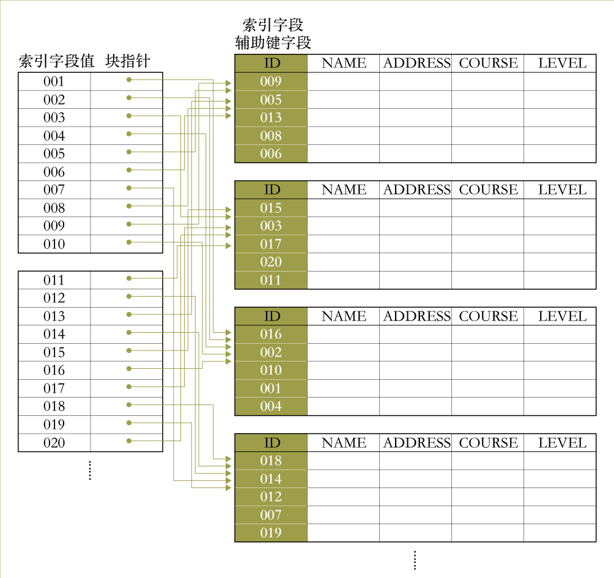</p>
<p>辅助索引通常需要比主索引更多的存储空间和更长的搜索时间，因为它的条目数量较多。但是，对任意记录的搜索时间可以通过使用辅助索引获得的提升，因为如果辅助索引不存在，我们将不得不对数据文件进行线性搜索。对于主索引，即使不存在，我们仍然可以在主数据文件上使用二分搜索。示例2解释了当使用辅助索引来定位记录时在访问次数上的改进。</p>
<h5 id="性能-1">性能</h5>
<p>示例2.</p>
<p>通过使用辅助索引所需的块访问次数来说明在检索性能上的改进：</p>
<p>和示例1相同的条件，有<span class="math inline">\(r = 40,000\)</span>条的记录存储在块大小为<span class="math inline">\(B = 1024\)</span>字节的磁盘上，文件记录是定长并且不跨块，每条记录大小<span class="math inline">\(R = 100\)</span>字节，正如前面所计算的，存储这些文件所需要的块数<span class="math inline">\(b=4000\)</span>。要对文件进行线性查找，我们平均需要<span class="math inline">\(b/2=4000/2=2000\)</span>次块访问才能找到记录。</p>
<p>现在假设我们在文件的非排序关键字字段上构造一个辅助索引，该字段长度为<span class="math inline">\(V=11​\)</span>个字节。与示例1中一样，块指针长为<span class="math inline">\(P=8​\)</span>字节。因此，索引条目的大小是<span class="math inline">\(R&#39;=11+8=19​\)</span>字节，索引文件的块因子<span class="math inline">\(bfr&#39;=\lfloor B/R&#39;\rfloor=\lfloor 1024/19\rfloor=53​\)</span>，每个块存放53个条目。在这样的密集辅助索引中，索引条目的总数<span class="math inline">\(r&#39;​\)</span>等于数据文件中的记录数目，即<span class="math inline">\(40000​\)</span>。索引所需的块数因此是<span class="math inline">\(b&#39;=\lceil r&#39;/bfr&#39;\rceil=\lceil 40000/53\rceil=755​\)</span>。而示例1中稀疏主索引只需要76个块。</p>
<p>要对索引文件执行二分搜索，需要<span class="math inline">\(\lceil log_2b&#39;\rceil=\lceil log_2755\rceil=10​\)</span>次块访问。使用这个索引找到实际数据记录，则再加上一次数据块访问，总而言之我们需要<span class="math inline">\(10+1=11​\)</span>次块访问。这相对于线性搜索平均所需的<span class="math inline">\(2000​\)</span>次块访问是一个巨大的改进。</p>
<h4 id="非关键字段索引">非关键字段索引</h4>
<p><strong>使用相同的原则，我们还可以在文件的非关键字段上构建辅助索引。</strong>在这种情况下，多个数据记录可以具有相同的索引字段。实现这样的索引有几种选择：</p>
<p>1.可以在索引文件中创建多个相同<span class="math inline">\(K(i)​\)</span>值的条目——即为每条具有相同<span class="math inline">\(K(i)​\)</span>值的记录都创建一个条目。另一个字段<span class="math inline">\(P(i)​\)</span>可以具有不同的块地址，取决于这些记录的存储位置。这样的索引就是一个密集索引。</p>
<p>2.或者，我们可以让索引条目使用变长记录。我们在<span class="math inline">\(K(i)​\)</span>的索引条目中维护一个指针列表——指针指向包含索引字段值为<span class="math inline">\(K(i)​\)</span>的记录的每个块。索引条目将如下所示：<span class="math inline">\(&lt;K(i), [P(i, 1), P(i, 2), P(i, 3), ......]&gt;​\)</span>。在选项1或选项2中，必须对索引上的二分搜索算法做些修改。</p>
<p>3.这是最常采用的方法。索引条目保持为定长，并为每种索引字段值构建一个条目，额外创建间接层来处理多个指针。这样的索引是稀疏索引。索引条目<span class="math inline">\(&lt;K(i), P(i)&gt;\)</span>中的指针<span class="math inline">\(P(i)\)</span>指向存放记录指针的块（这是额外层），该块中的每个记录指针指向包含索引字段的值为<span class="math inline">\(K(i)\)</span>的记录的数据文件块之一（如果某些值<span class="math inline">\(K(i)\)</span>出现在太多记录中，那么它们的记录指针不能放进单个块，则使用链接的块列表）。如下图：</p>
<p>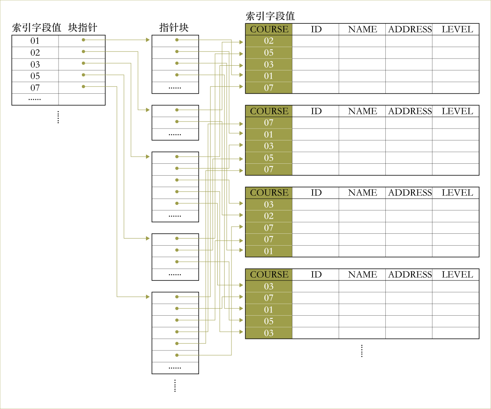</p>
<p>从上图可以看出，不同于2.中所示的使用<span class="math inline">\(&lt;K(i), [P(i, 1), P(i, 2), P(i, 3), ......]&gt;​\)</span>和<span class="math inline">\(&lt;K(j), [P(j, 1), P(j, 2), P(j, 3), ......]&gt;​\)</span>这样的索引条目，3.中会有一个额外的数据结构层用于存储记录指针，从而保证了索引条目定长。</p>
<p>通过索引字段，辅助索引是对数据记录的逻辑排序。如果我们按辅助索引中条目的顺序访问记录，则可以按索引字段值的顺序检索记录。</p>
<h2 id="多层索引">多层索引</h2>
<h3 id="原理">原理</h3>
<p>上面的索引结构都涉及到有序索引文件。二分搜索用来定位 包含 指定索引字段值的记录 的块，对于索引文件所需要的磁盘块数量<span class="math inline">\(b\)</span>，二分搜索需要<span class="math inline">\(log_2b\)</span>次块访问。</p>
<p><strong>多层索引背后的思想是通过把将要继续检索的块数除以<span class="math inline">\(bfr\)</span>从而减少检索</strong>，<span class="math inline">\(bfr\)</span>通常大于2（相比较于二分检索），因此，检索的空间可以飞快地减少。<span class="math inline">\(bfr\)</span>值也称为多层索引的扇出，用符号<span class="math inline">\(fo\)</span>来表示。检索一个多层索引需要<span class="math inline">\(log_2b\)</span>次块访问，如果扇出大于2，则该数小于对数据文件二分搜索的次数。</p>
<h3 id="结构">结构</h3>
<p>多层索引是一个每个<span class="math inline">\(K(i)​\)</span>值都不同的排序文件，之前所讨论的单层有序索引在多层索引中成为了基础索引，也就是第一层索引。上文提过索引文件实际上是一种具有两个字段的特殊类型的数据文件。因此，我们也可以为索引文件本身构建一个主索引（即在第一层索引之上）。相对于第一层这个新索引称为第二层索引。</p>
<p>因为第二层是一种主索引，所以我们可以使用块锚，对于第一层索引的每个块都能创建一个条目。第二层索引和所有后续层索引的块因子<span class="math inline">\(bfr​\)</span>与第一层索引的块<span class="math inline">\(bfr​\)</span>都相同，因为所有索引条目大小都一样。如果第一层索引有<span class="math inline">\(r_1​\)</span>个条目，并且索引的块因子<span class="math inline">\(bfr=fo​\)</span>，那么第一层索引需要<span class="math inline">\(\lceil r_1/fo\rceil​\)</span>个块，也就是第二层索引所需的条目<span class="math inline">\(\lceil r_2=r_1/fo \rceil​\)</span>。</p>
<p>重复上述过程，并且可以在第二层索引之上创建第三层索引。第三层索引则是第二层的主索引，对于第二层的每个块都创建一个条目。因此，第三层索引的条目<span class="math inline">\(r_3 =\lceil r_2/fo \rceil​\)</span>。（仅当第一层需要多个磁盘存储块时才需要第二层索引，类似地，只有当第二层索引需要多个块时才需要第三层索引）。</p>
<p>我们可以继续构建索引，直到索引层<span class="math inline">\(d​\)</span>的所有条目都能放进同一个块。第<span class="math inline">\(d​\)</span>层的这个块称为最高层索引（第一层索引位于底部）。每个索引层为前一层的条目数量除以<span class="math inline">\(fo​\)</span>，因此我们可以使用公式<span class="math inline">\(1&lt;=r_1/fo^{d-1}​\)</span>来计算<span class="math inline">\(d​\)</span>。因此，具有<span class="math inline">\(r_1​\)</span>个第一层索引条目的多层索引有<span class="math inline">\(d​\)</span>层，其中<span class="math inline">\(d =\lceil log_{fo}r_1\rceil+1​\)</span>。</p>
<p><strong>这种多层结构可用于任何类型的索引中，无论它是主索引，聚集索引还是辅助索引，只要第一层索引的条目具有不同的<span class="math inline">\(K(i)​\)</span>和定长即可。</strong>下图描绘了在主索引之上构建的多层索引：</p>
<p>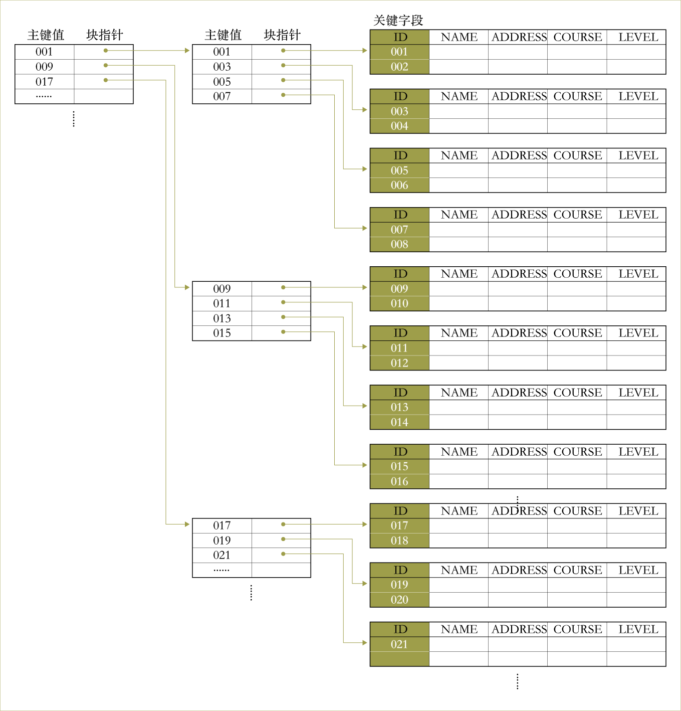</p>
<p>图中是一个在关键字字段上排序的文件，因为主索引占四个块，所以二层索引可以完全放进同一个块中，因此这个二层索引就是最高层索引。</p>
<h3 id="性能-2">性能</h3>
<p>示例3.</p>
<p>用下面的示例来说明这个过程多层索引如何从减少块访问次数方面提高性能。</p>
<p>假设将示例2的密集索引转换为多层索引。在示例2中，我们计算出索引块因子<span class="math inline">\(bfr=53​\)</span>，这也是多层索引的扇出。根据之前的计算，第一层索引块的数量<span class="math inline">\(b_1=755​\)</span>，因此第二层索引块的数目<span class="math inline">\(b_2=\lceil b_1/fo\rceil=\lceil 755/53\rceil=15​\)</span>，第三层索引<span class="math inline">\(b_3=\lceil b_2/fo\rceil=\lceil 15/53\rceil=1​\)</span>，因此第三层索引也是最顶层索引。</p>
<p>使用基于非排序键值的多层索引搜索一条记录，我们必须访问每层索引上的某一块再加上数据文件中的一个块。因此，我们需要<span class="math inline">\(d+1=3+1=4​\)</span>次块访问。与示例2进行比较，其使用单层索引和二叉搜索时需要11次块访问。</p>
<p>应该注意的是，我们也可能有稀疏的多层主索引。在这种情况下，我们必须先从文件中访问数据块，然后才能确定被搜索的记录是否在文件中。对于密集索引，这可以通过访问第一层索引来确定而不必通过访问数据块，因为文件中的每条记录都有索引条目。</p>
<p><strong>如前所述，多层索引可提高搜索记录的性能。但是，插入和删除的问题仍然存在，因为所有索引层都是物理排序的文件。为了使用多层索引的同时减少索引插入和删除的问题，数据库开发人员通常采用多层结构，并且在每个块中留下一些空间用于插入新条目。这称为动态多层索引，通常使用称为B树和B+树的数据结构来实现。</strong></p>
<h2 id="动态多层索引">动态多层索引</h2>
<h3 id="树">树</h3>
<p><span class="math inline">\(B​\)</span>树和<span class="math inline">\(B^+​\)</span>树是树数据结构的特殊类型。树由节点组成。除了名为root的特殊节点外，树中的每个节点都有一个父节点和任意数量（包括零）的子节点。根节点没有父节点。没有任何子节点的节点称为叶节点，非叶节点称为内部节点。</p>
<p>节点的层数总是比其父节点的层数大一，根节点的层数为零。节点的子树由该节点及其所有后代节点（即其子节点，其子节点的子节点等）组成。</p>
<p>实现树的一种方法是在每个节点中具有与该节点的子节点一样多的指针，在有些情况中，父指针也存储在每个节点中。除了指针之外，节点通常还会存储其他信息。当多层索引被实现为树结构时，该信息包括用于指导搜索特定记录的的索引字段的值。</p>
<h3 id="搜索树">搜索树</h3>
<p>搜索树是一种特殊类型的树，给定搜索字段的值用于指导搜索。上面所提到的多层索引可以被认为是搜索树的变体。多层索引中的每个块都是树中的一个节点。这样的节点最多可以有<span class="math inline">\(fo​\)</span>个指针和关键字，其中<span class="math inline">\(fo​\)</span>指索引扇出。</p>
<p>每个节点中的索引字段值引导我们到下一个节点（即下一层索引的块），直到我们到达存储所需记录的块。通过跟随指针，我们将每层的搜索限制在子树上，并且可以忽略不在该子树中的所有其他节点。</p>
<h4 id="定义">定义</h4>
<p><strong>搜索树和多层索引有轻微的不同。</strong>阶数为<span class="math inline">\(p\)</span>的搜索树每个节点最多包含<span class="math inline">\(p-1\)</span>个搜索值和<span class="math inline">\(p\)</span>个指针，顺序为<span class="math inline">\(&lt;P_1, K_1, P_2, K_2, ……, P_{q-1}, K_{q- 1}, P_q&gt;\)</span>，其中<span class="math inline">\(q&lt;=p\)</span>。</p>
<p>每个<span class="math inline">\(P_i​\)</span>是指向子节点的指针（在叶节点的情况下为空指针），并且每个搜索值<span class="math inline">\(K_i​\)</span>是来自有序值的集合。假设所有搜索值都是唯一的，下图一般描述了搜索树的节点：</p>
<p>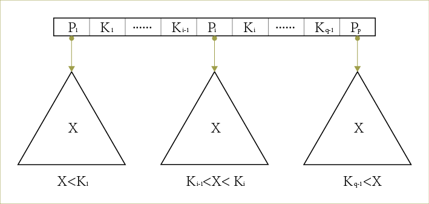</p>
<p>搜索树始终存在两个约束条件：</p>
<ul>
<li>在每个节点（内部或叶子）内，<span class="math inline">\(K_1&lt;K_2&lt;......&lt;K_{q-1}\)</span>。</li>
<li>对于<span class="math inline">\(P_i​\)</span>指向的子树中的所有值<span class="math inline">\(X​\)</span>，当<span class="math inline">\(1 &lt;i &lt;q​\)</span>，有<span class="math inline">\(K_{i-1}&lt;X&lt;K_i​\)</span>；当<span class="math inline">\(i=1​\)</span>，<span class="math inline">\(X&lt;K_i​\)</span>；当<span class="math inline">\(i=q​\)</span>，和<span class="math inline">\(K_{i-1}&lt;X​\)</span>。</li>
</ul>
<p>每当我们搜索值<span class="math inline">\(X​\)</span>时，则根据上面第二个条件中的公式找到满足条件的<span class="math inline">\(P_i​\)</span>。</p>
<p>搜索树可用作搜索存储在磁盘文件中的记录的机制。树中的值可以是文件中某一个字段的值，称为搜索字段（如果是多层索引的情况，则与索引字段相同）。树中的每个值都与指向具有该值的记录的指针相关联。或者，指针可以指向包含该记录的磁盘块。</p>
<p>通过将每个树节点分配给一个磁盘块，可以将搜索树本身存储在磁盘上。插入新记录时，我们必须在树中添加新记录的搜索值和指向该记录（或包含该记录的块）的指针来更新搜索树。</p>
<p>算法对于在搜索树中插入和删除搜索值的同时仍满足两个约束是必不可少的。<strong>通常，这些算法不保证搜索树是平衡的（平衡意味着所有叶节点都处于同一级别）。保持搜索树平衡很重要，因为它保证没有节点处于非常高的叶层而导致的搜索期间需要许多次块访问。</strong>不平衡搜索树的另一个问题是记录删除可能使树中的一些节点几乎为空，从而浪费存储空间并增加层数。</p>
<h3 id="b树平衡树"><span class="math inline">\(B\)</span>树：平衡树</h3>
<p><strong><span class="math inline">\(B​\)</span>树是一种多了一些额外约束条件的搜索树，从而确保树始终是平衡的，并且可以删除被浪费的空间。而且能够让查找、顺序访问、插入、删除等操作在对数时间内完成。</strong></p>
<p>对于<span class="math inline">\(B​\)</span>树，为了维持这些约束，插入和删除的算法变得更加复杂。不过大多数插入和删除仍然是简单的过程，当想要将值插入已经满的节点或者从只有半满的节点中删除值时，它们才会变得复杂。原因是不仅要平衡<span class="math inline">\(B​\)</span>树，而且<span class="math inline">\(B​\)</span>树中的节点（除根之外）不能有太多或太少搜索值。</p>
<h4 id="定义-1">定义</h4>
<p><span class="math inline">\(p\)</span>阶的<span class="math inline">\(B\)</span>树具有以下约束条件：</p>
<ul>
<li>每个内部节点的形式为<span class="math inline">\(&lt;P_1, &lt;K_1, Pr_1&gt;, P_2, &lt;K_2, Pr_2&gt;, ……, P_{q-1}, &lt;K_{q-1}, Pr_{q-1}&gt;, Pq&gt;​\)</span>，其中<span class="math inline">\(q&lt;= p​\)</span>。每个<span class="math inline">\(P_i​\)</span>是一个树指针，指向树中另一个节点。每个<span class="math inline">\(Pr_i​\)</span>是数据指针，指向搜索字段为<span class="math inline">\(K_i​\)</span>的记录（或者包括这条记录的块）。</li>
<li>在每个节点内，<span class="math inline">\(K_1&lt;K_2&lt;......&lt;K_{q-1}​\)</span>。</li>
<li>对于<span class="math inline">\(P_i​\)</span>指向的子树中的所有值<span class="math inline">\(X​\)</span>，当<span class="math inline">\(1 &lt;i &lt;q​\)</span>，有<span class="math inline">\(K_{i-1}&lt;X&lt;K_i​\)</span>；当<span class="math inline">\(i=1​\)</span>，<span class="math inline">\(X&lt;K_i​\)</span>；当<span class="math inline">\(i=q​\)</span>，和<span class="math inline">\(K_{i-1}&lt;X​\)</span>。</li>
<li>每个节点最多具有<span class="math inline">\(p\)</span>个树指针和<span class="math inline">\(p-1\)</span>个搜索键（<span class="math inline">\(p\)</span>是树的阶，指所能容纳的最大值）。</li>
<li>除根节点和叶节点外，每个节点至少具有<span class="math inline">\(\lceil p/2\rceil​\)</span>树指针和<span class="math inline">\(\lceil p/2\rceil-1​\)</span>搜索键值（即不得小于半满）。根节点除非是树中唯一的节点，否则至少有两个树指针（一个搜索键值）。</li>
<li>具有<span class="math inline">\(q​\)</span>个树指针的节点，<span class="math inline">\(q&lt;=p​\)</span>具有<span class="math inline">\(q-1​\)</span>个搜索键字段值（因此具有<span class="math inline">\(q-1​\)</span>个数据指针）。</li>
<li>所有叶节点都处于同一层。它们具有与内部节点相同的结构，除了它们的所有指针<span class="math inline">\(P_i​\)</span>都为空指针。</li>
</ul>
<p>下图是<span class="math inline">\(p\)</span>阶<span class="math inline">\(B\)</span>树中节点的一般结构：</p>
<p>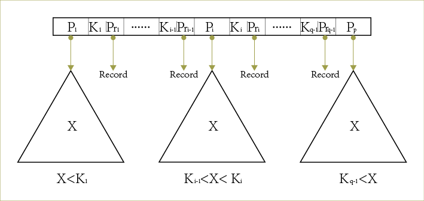</p>
<p>因为我们假设了<span class="math inline">\(B\)</span>树是关键字段上的访问结构，所以<span class="math inline">\(B\)</span>树中的所有搜索值<span class="math inline">\(K\)</span>都是唯一的。如果我们在非关键字段上使用<span class="math inline">\(B\)</span>树，我们必须将数据指针<span class="math inline">\(Pr_i\)</span>的定义更改为指向包含文件记录的块（或链接的块）。这种额外的间接层类似于之前讨论的辅助索引的3。</p>
<h4 id="插入和删除">插入和删除</h4>
<p><span class="math inline">\(B\)</span>树从层数0的根节点开始，一旦根节点放满了<span class="math inline">\(p-1\)</span>个搜索键值，插入将导致溢出，并且这个节点会被拆分，在层数1创建两个节点（即创建一个新的层），只有中间键值保留在根节点中，其余的键值在两个新节点之间均匀重新分配。</p>
<p>当非根节点已满并且在其中插入新条目时，该节点将被拆分为同一层的两个新节点，并且中间键值将与两个指向拆分后的节点的树指针一起移动到父节点。如果此类移动导致父节点溢出，则父节点也会被拆分（以相同的方式）。这种拆分可以一直传播到根节点，每次拆分根节点时都会创建一个新的叶层。</p>
<p>eg.在3阶<span class="math inline">\(B\)</span>树的某个节点中中插入9：</p>
<p>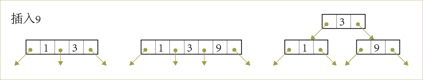</p>
<p>删除可能会导致下溢问题，其中节点变得小于半满。当发生这种情况时，下溢节点可以从其相邻节点获得一些键值来重新分配，如果没有足够的值来重新分配，则可以与其相邻节点之一合并。这种合并也可以一直传播到根。因此，删除可以减少树的的层数。</p>
<p><strong>通过分析和模拟已经表明，在<span class="math inline">\(B\)</span>树上的大量随机插入和删除之后，当树中的值的数量趋于稳定时，这些节点大约69％满。<span class="math inline">\(B^+\)</span>树也是如此。在这种情况下，很少会发生节点拆分和合并，因此插入和删除变得非常有效。</strong>如果值的数量增加，树也将增长但也不会有什么严重的问题。</p>
<p>以下两个示例向我们展示了如何计算存储在磁盘上的B树的阶数<span class="math inline">\(p​\)</span>（示例4），以及如何计算<span class="math inline">\(B​\)</span>树的块数和层数（示例5）。</p>
<p>示例4.</p>
<p>假设搜索键字段长<span class="math inline">\(V=9​\)</span>字节，磁盘块大小为<span class="math inline">\(B=512​\)</span>字节，数据指针<span class="math inline">\(pr=7​\)</span>字节，块指针为<span class="math inline">\(P=6​\)</span>字节。每个B树节点可以具有至多<span class="math inline">\(p​\)</span>个树指针，<span class="math inline">\(p-1​\)</span>个搜索键字段值和<span class="math inline">\(p-1​\)</span>个数据指针（对应于关键字段值）。每个B树节点放进一个磁盘块。因此，我们必须得到</p>
<p><span class="math inline">\(p*P+(p-1)*(pr+V)&lt;=B​\)</span>，即 <span class="math inline">\(p*6+(p-1) * (7 + 9)&lt;=512​\)</span>，得到<span class="math inline">\(p=24​\)</span>。</p>
<p>在实际情况中，<span class="math inline">\(p\)</span>的值通常小于24（例如，<span class="math inline">\(p＝23\)</span>）。原因在于，通常<span class="math inline">\(B\)</span>树节点可能会包含操纵树的算法所需的附加信息，例如节点中的条目数<span class="math inline">\(q\)</span>以及可能指向父节点的指针。因此，在确定<span class="math inline">\(p\)</span>的值之前我们应该知道块大小实际会减去一部分用于存放这些信息。</p>
<p>示例5.</p>
<p>假设示例4的搜索字段是非排序关键字段，并且我们在该字段上构造B树，假设树的每个节点都是满69％，那么平均每个节点将具有<span class="math inline">\(p*0.69=23*0.69=16​\)</span>个指针，因此具有15个搜索键值，平均扇出<span class="math inline">\(fo＝16​\)</span>。</p>
<p>从根开始，分别计算平均每个层级可能存储多少值和指针（参见下表）：</p>
<p>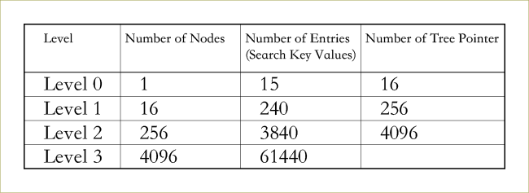</p>
<p>在每层，我们通过将上一层的指针数乘以搜索键值数目15来计算条目数。因此，对于给定的块大小，指针大小和搜索键字段大小（如示例5中所示），两层的B树可以计算出容纳多达<span class="math inline">\(3840+240+15=4095​\)</span>个条目，一个三层B树平均可以容纳<span class="math inline">\(61440+3840+240+15 = 65,535​\)</span>个条目。</p>
<h3 id="b树"><span class="math inline">\(B^+\)</span>树</h3>
<p>动态多层索引的大多数实现使用的是<span class="math inline">\(B\)</span>树的变体，称为<span class="math inline">\(B^+\)</span>树。<span class="math inline">\(B^+\)</span>树不保存内部节点的数据指针，只进行索引，使得每个内部节点能保存的搜索字段数量增加。因此，在<span class="math inline">\(B\)</span>树中，每个搜索字段以及相应的数据指针在树中只出现一次。在<span class="math inline">\(B^+\)</span>树中，数据指针仅存储在树的叶节点处，因此，叶节点的结构不同于内部节点的结构。</p>
<p>如果搜索字段是关键字段，则对每个搜索字段的值叶节点都有一个条目，以及一个指向包含该值的记录的块的数据指针。对于非关键搜索字段，指针指向指针块，其中的指针指向记录，这会创建额外的索引层。</p>
<p><span class="math inline">\(B^+​\)</span>树的叶节点通常链接在一起，以在搜索字段上提供对记录的有序访问。这些叶节点类似于多层索引的第一层。内部节点对应于多层索引的其他层级。叶节点的一部分搜索字段值在内部节点中被重复，用来指导搜索。</p>
<h4 id="定义-2">定义</h4>
<p>阶数为<span class="math inline">\(p\)</span>的<span class="math inline">\(B^+\)</span>树的内部节点的结构定义如下：</p>
<ul>
<li>每个内部节点具有以下形式：<span class="math inline">\(&lt;P_1, K_1, P_2, K_2, ……, P_{q-1}, K_{q-1}, P_q&gt;​\)</span>，其中<span class="math inline">\(q&lt;=p​\)</span>并且每个<span class="math inline">\(P_i​\)</span>是树指针。</li>
<li>在每个内部节点内，<span class="math inline">\(K_1&lt;K_2&lt;......&lt;K_{q-1}​\)</span>。</li>
<li>对于<span class="math inline">\(P_i​\)</span>指向的子树中的所有搜索字段值<span class="math inline">\(X​\)</span>，当<span class="math inline">\(1 &lt;i &lt;q​\)</span>，有<span class="math inline">\(K_{i-1}&lt;X&lt;K_i​\)</span>；当<span class="math inline">\(i=1​\)</span>，<span class="math inline">\(X&lt;K_i​\)</span>；当<span class="math inline">\(i=q​\)</span>，和<span class="math inline">\(K_{i-1}&lt;X​\)</span>。</li>
<li>每个内部节点最多具有<span class="math inline">\(p​\)</span>个树指针和<span class="math inline">\(p-1​\)</span>个搜索键值。</li>
<li>除根之外的每个内部节点至少具有<span class="math inline">\(\lceil p/2 \rceil​\)</span>树指针和<span class="math inline">\(\lceil p/2 \rceil-1​\)</span>个搜索键值（即不得小于半满）。如果根节点是内部节点，则它至少有两个树指针（一个搜索键值）。</li>
<li>具有<span class="math inline">\(q​\)</span>个树指针的内部节点，<span class="math inline">\(q&lt;=p​\)</span>，有<span class="math inline">\(q-1​\)</span>个搜索键字段值。</li>
</ul>
<p>阶数为<span class="math inline">\(p\)</span>的<span class="math inline">\(B^+\)</span>树叶节点的结构定义如下：</p>
<ul>
<li>每个叶节点具有形式<span class="math inline">\(&lt;&lt; K_1, Pr_1&gt;, &lt;K_2, Pr_2&gt;, ……, &lt;K_{q-1}, Pr_{q-1}&gt;, P_{next}&gt;&gt;\)</span>，其中<span class="math inline">\(q&lt;=p\)</span>。每个<span class="math inline">\(Pr_i\)</span>都是一个数据指针，<span class="math inline">\(P_{next}\)</span>指向<span class="math inline">\(B^+\)</span>树的下一个叶节点。</li>
<li>在每个内部节点内，<span class="math inline">\(K_1&lt;K_2&lt;...... &lt;K_{q-1}​\)</span>。</li>
<li>每个<span class="math inline">\(Pr_i​\)</span>是指向搜索字段值为<span class="math inline">\(K_i​\)</span>的记录的数据指针，或指向包含记录的文件块（或者如果搜索字段不是关键字段，那么指向一个指针块， 其中的指针指向搜索字段值为<span class="math inline">\(K_i​\)</span>记录）。</li>
<li>每个叶节点至少具有<span class="math inline">\(\lceil p/2 \rceil​\)</span>个值（条目）。</li>
<li>所有叶节点都处于同一层级。</li>
</ul>
<p>下图描绘了<span class="math inline">\(p​\)</span>阶的<span class="math inline">\(B^+​\)</span>树的内部节点的一般结构：</p>
<p>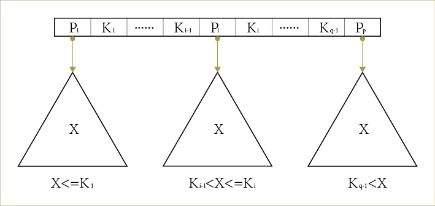</p>
<p>下图描绘了<span class="math inline">\(p\)</span>阶树的<span class="math inline">\(B^+\)</span>树的叶节点的一般结构：</p>
<p>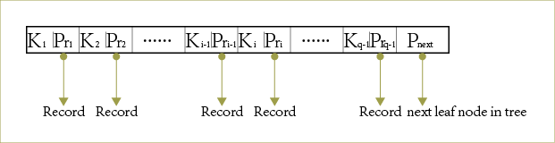</p>
<p>由于内部节点中的条目仅包含搜索值和树指针，没有任何数据指针，和B树相比，因此可以将更多的搜索值容纳到<span class="math inline">\(B^+\)</span>树的内部节点中。因此，对于相同的块（节点）大小，<span class="math inline">\(B^+\)</span>树的阶<span class="math inline">\(p\)</span>可以大于<span class="math inline">\(B\)</span>树的阶<span class="math inline">\(p\)</span>（参见示例6）。这可以减少<span class="math inline">\(B^+\)</span>树层树，从而缩短搜索时间。</p>
<p>由于内部节点和叶节点的结构不同，因此它们的阶可能不同。通常，阶<span class="math inline">\(p\)</span>用于内部节点，并且叶节点可以用<span class="math inline">\(p_{leaf}\)</span>表示，其被定义为叶节点中的最大数据指针数。</p>
<p>示例6.</p>
<p>为了计算<span class="math inline">\(B^+\)</span>树的阶数<span class="math inline">\(p\)</span>，假设搜索键字段是<span class="math inline">\(V=9\)</span>字节长，块大小是<span class="math inline">\(B=512\)</span>字节，记录指针是<span class="math inline">\(Pr=7\)</span>字节，并且块指针是<span class="math inline">\(P=6\)</span>个字节，全部如例4所示。这种B+树的内部节点最多可以有<span class="math inline">\(p\)</span>个树指针和<span class="math inline">\(p-1\)</span>个搜索字段值，这些都能放进单个块。因此，我们有</p>
<p><span class="math inline">\(p*P+(p-1)*V&lt;=B​\)</span>，<span class="math inline">\(p*6+(p-1)*9&lt;=512​\)</span></p>
<p>我们可以选择p作为满足上述不等式的最大值，<span class="math inline">\(p=34​\)</span>。这大于示例5中的B树的值23，导致扇出更大并且每个内部节点中的能存放的条目更多。</p>
<p>类似地可以计算叶节点的阶：</p>
<p><span class="math inline">\(p_{leaf} *(Pr+V)+P&lt;=B\)</span>，<span class="math inline">\(p_{leaf}*(7+9)+6&lt;=512\)</span></p>
<p>因此，每个叶节点可以拥有<span class="math inline">\(p_{leaf}=31\)</span>个(键值，数据指针)对。</p>
<p>与<span class="math inline">\(B\)</span>树一样，在实际情况中，<span class="math inline">\(p\)</span>和<span class="math inline">\(p_{leaf}\)</span>的值通常小于上述值。原因是，通常，我们可能需要在每个节点中添加其他信息来实现插入和删除算法。这种信息可以包括节点的类型（即内部或叶子），节点中当前条目<span class="math inline">\(q\)</span>的数量，以及指向父节点和兄弟节点的指针（例如，<span class="math inline">\(p_{previous}\)</span>）。因此，在确定<span class="math inline">\(p\)</span>和<span class="math inline">\(p_{leaf}\)</span>的值之前，我们应该将块大小减去一部分这些信息所需的空间量。</p>
<p>下一个示例解释了如何计算<span class="math inline">\(B^+\)</span>树中的条目数。</p>
<p>示例7.</p>
<p>假设我们想要在示例6的字段上构建<span class="math inline">\(B^+\)</span>树。为了计算<span class="math inline">\(B^+\)</span>树的条目数，也假设每个节点已满69％。平均而言，每个内部节点将具有<span class="math inline">\(0.69*p=0.69*34 = 23\)</span>个指针和22个值。平均而言，每个叶节点将拥有<span class="math inline">\(0.69*p_{leaf}=0.69*31 = 21\)</span>个数据记录指针。这样的<span class="math inline">\(B^+\)</span>树每层具有以下平均条目数：</p>
<p>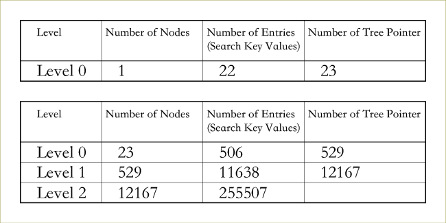</p>
<p>对于上面提供的块大小，指针大小和搜索字段大小，三层B+树平均最多可容纳<span class="math inline">\(255,507​\)</span>条记录指针。将其与示例6中相应B树的<span class="math inline">\(65,535​\)</span>个条目进行比较。很明显，B+树更有效。</p>
<h4 id="搜索插入和删除">搜索、插入和删除</h4>
<p>要根据指定的搜索字段值<span class="math inline">\(K​\)</span>搜索记录：</p>
<ul>
<li>我们总是从<span class="math inline">\(B^+\)</span>树的根开始。将<span class="math inline">\(K\)</span>与存储在根中的值进行比较，直到找到符合条件的<span class="math inline">\(K&lt;= K_i\)</span>的第一个<span class="math inline">\(K_i\)</span>。然后按照树指针<span class="math inline">\(P_i\)</span>进入下一级。如果没有找到这样的<span class="math inline">\(K_i\)</span>，则按照最右边的指针<span class="math inline">\(P_q​\)</span>到下一级。（我们假设根不是树中的唯一节点。否则，请按照叶节点的搜索过程进行操作。）</li>
<li>如果下一级节点仍然是内部节点，我们重复上述过程，直到达到叶层。</li>
<li>在叶节点内，我们搜索等于<span class="math inline">\(K\)</span>的<span class="math inline">\(K_i\)</span>。如果找到，我们按照其数据指针<span class="math inline">\(Pr_i\)</span>来检索数据块。否则，所需记录不在文件中。</li>
</ul>
<p>每个不同的搜索值必须存在于叶层，因为所有数据指针都位于叶层。但是，只有部分搜索值存在于内部节点中，用来指导搜索。另外，出现在内部节点中的每个值也会出现在其左子树中的最右侧值。</p>
<p>由于<span class="math inline">\(B^+​\)</span>树定义施加的限制（约束），在<span class="math inline">\(B^+​\)</span>树中插入和删除条目可能导致与<span class="math inline">\(B​\)</span>树相同的上溢和下溢问题。这些问题以与<span class="math inline">\(B​\)</span>树类似的方式处理，即通过分割或合并相关节点来处理。</p>
<h5 id="处理溢出">处理溢出</h5>
<ul>
<li>当叶节点因插入新条目而溢出时，必须将其拆分。原始节点中的前<span class="math inline">\(m=\lceil(p_{leaf}+1)/2\rceil​\)</span>个条目保留在原处，其余的被移动到新的叶节点（刚刚创建）。</li>
<li>原始<span class="math inline">\(P_{next}​\)</span>指针被更改并指向新的叶节点，新节点中的<span class="math inline">\(new_-P_{next}​\)</span>将具有<span class="math inline">\(P_{next}​\)</span>的原始值。</li>
<li>第<span class="math inline">\(m\)</span>个搜索值在父节点中被复制，并且在父节点中创建指向新节点的指针。</li>
<li>如果由于父节点已满，上面的值移动导致父节点溢出，那么父节点也必须拆分。</li>
<li>新的内部节点将保留从<span class="math inline">\(P_{n+1}\)</span>到溢出节点的末尾条目。</li>
<li>这种拆分可以一直向上传播以创建新的根节点，从而为B+树创建一个新的层级。</li>
</ul>
<p>这个例子用书上的例子</p>
<h5 id="处理下溢">处理下溢</h5>
<ul>
<li>删除条目时，总是从叶层删除它。如果它出现在内部节点中（比如是子树的最右边的值的情况），那么也必须删除。在这种情况下，叶节点中左侧的值将在内部节点中替换它，因为该节点变成了子树中最右侧的条目。</li>
<li>如果删除导致下溢，我们将尝试查找相邻的叶节点并在两个节点之间重新分配条目，以便两者都可以至少半满。</li>
<li>如果我们找不到具有足够条目的这样的相邻节点，那么把它们合并。在这种情况下，叶节点的数量会减少。</li>
<li>如果由于条目数量不足而无法在两个节点之间进行合并，我们可能会将三个叶节点合并为两个。</li>
<li>在合并情况下，因为需要少一个树指针和搜索值，下溢可以传播到内部节点，传播到根时减少树层级。</li>
</ul>
<h3 id="b树-1"><span class="math inline">\(B^*\)</span>树</h3>
<p>前面所说的<span class="math inline">\(B​\)</span>树和<span class="math inline">\(B^+​\)</span>树的定义要求每个节点至少半满，改变这个要求让每个节点至少三分之二满。在这种情况下，<span class="math inline">\(B​\)</span>树被称为<span class="math inline">\(B^*​\)</span>树。这可以进一步提高检索性能，而不会在维护树时产生太多开销。</p>
<h3 id="总结">总结</h3>
<p><span class="math inline">\(B​\)</span>树/<span class="math inline">\(B^+​\)</span>树/<span class="math inline">\(B^*​\)</span>树是可用于非常有效地实现动态多层索引的数据结构。当讨论多层索引时，我们强调多层索引可以为任何类型的索引构建多层结构，无论它是主索引，聚类索引还是辅助索引，只要第一级索引具有不同的<span class="math inline">\(K(i)​\)</span>值和定长。</p>
<p>作为上述的逻辑结果，多层索引结构不要求底层数据文件具有任何特定的文件组织，即它可以是堆文件，排序文件或一些其他组织。</p>
<h2 id="参考文章">参考文章：</h2>
<p>1.平衡树参考&lt;Algorithms, 4th edition&gt;3.2Bianry Search Trees &amp; 3.3Balanced Search Trees</p>
<p>2.索引结构、<span class="math inline">\(B\)</span>树和<span class="math inline">\(B^+​\)</span>树参考&lt;Fundamentals of Database Systems 7th Edition&gt;16章&amp; 17章</p>
<p>3.硬盘的相关内容参考《深入理解计算机系统》</p>

      
    </div>
    <footer class="article-footer">
      <a data-url="http://xiaomeizhuang.github.io/2019/10/09/为什么B-树适合作为索引的结构/" data-id="ck22mfq7d0000rll76tz9438z" class="article-share-link">Share</a>
      
      
    </footer>
  </div>
  
    
<nav id="article-nav">
  
    <a href="/2019/10/10/剑指offer小结/" id="article-nav-newer" class="article-nav-link-wrap">
      <strong class="article-nav-caption">Newer</strong>
      <div class="article-nav-title">
        
          剑指offer小结
        
      </div>
    </a>
  
  
    <a href="/2019/10/06/内排序/" id="article-nav-older" class="article-nav-link-wrap">
      <strong class="article-nav-caption">Older</strong>
      <div class="article-nav-title">内排序</div>
    </a>
  
</nav>

  
</article>

</section>
        
      </div>
      <footer id="footer">
  
  <div class="outer">
    <div id="footer-info" class="inner">
      &copy; 2019 <br>
      Powered by <a href="http://hexo.io/" target="_blank">Hexo</a>
    </div>
  </div>
</footer>
    </div>
    <nav id="mobile-nav">
  
    <a href="/" class="mobile-nav-link">Home</a>
  
    <a href="https://github.com/xiaomeizhuang" class="mobile-nav-link">Github</a>
  
    <a href="/About" class="mobile-nav-link">About</a>
  
</nav>
    

<script src="//ajax.googleapis.com/ajax/libs/jquery/2.0.3/jquery.min.js"></script>


  <link rel="stylesheet" href="/fancybox/jquery.fancybox.css">
  <script src="/fancybox/jquery.fancybox.pack.js"></script>


<script src="/js/script.js"></script>


  </div><!-- hexo-inject:begin --><!-- hexo-inject:end -->
</body>
</html>